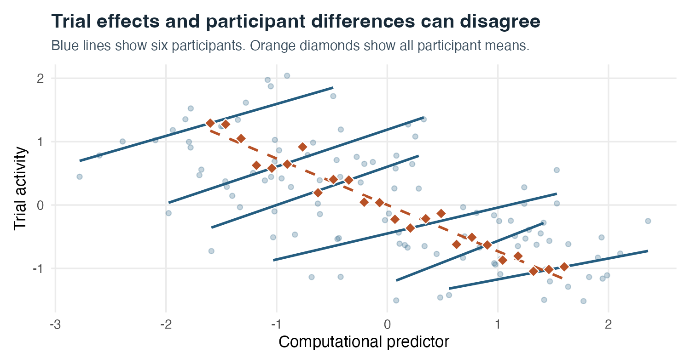
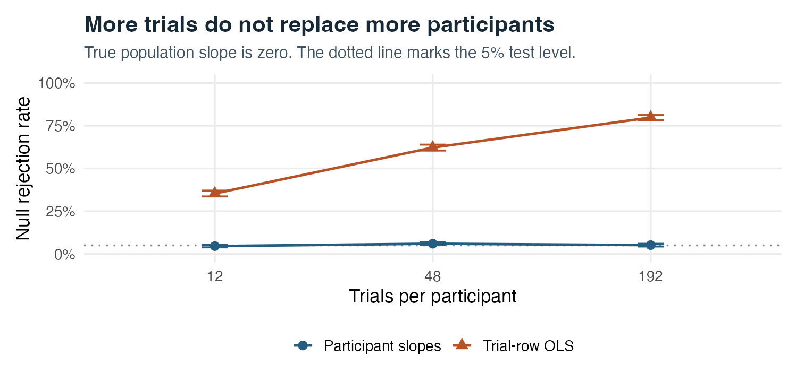
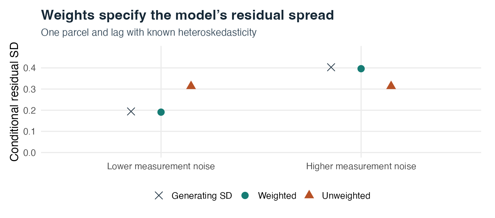
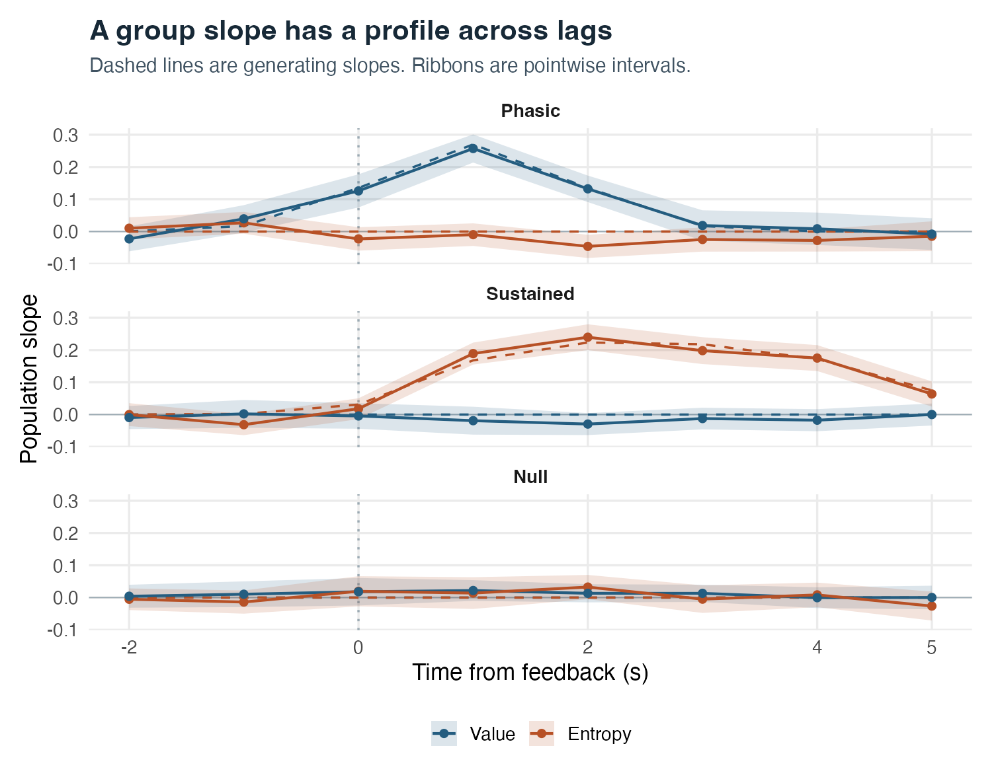
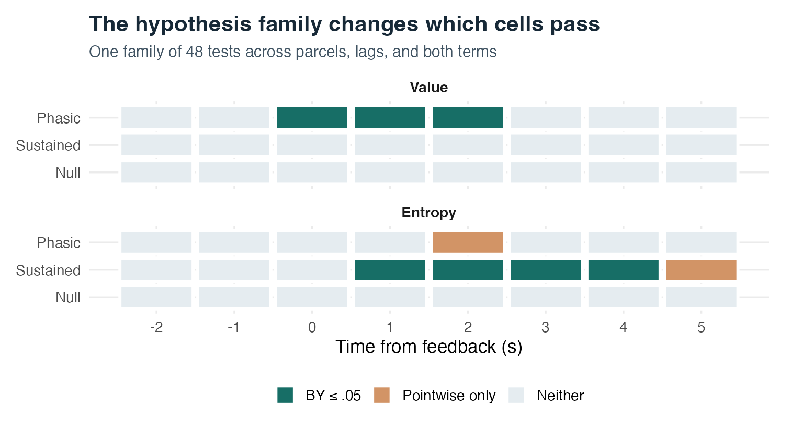
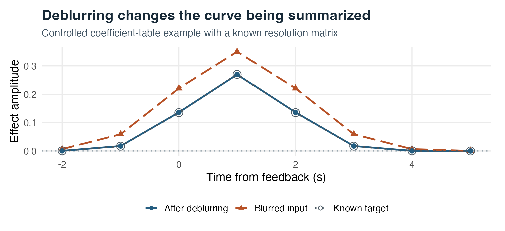
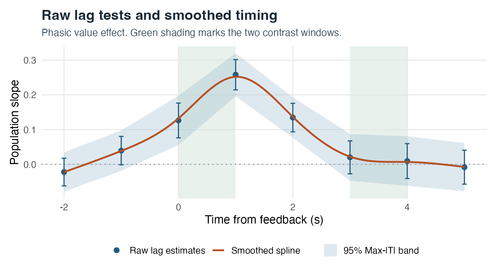
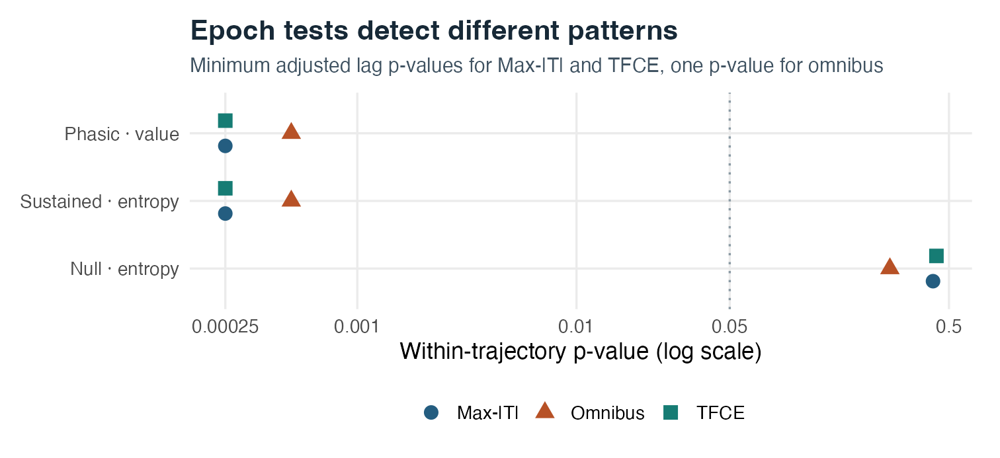
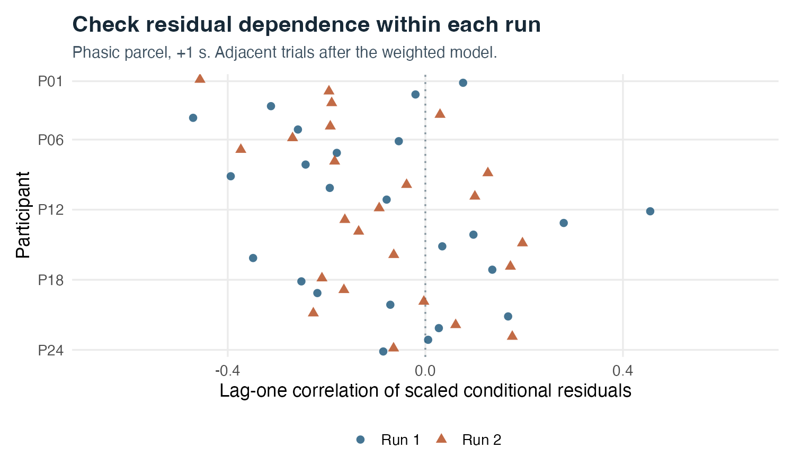

library(medusa)
# Pathway A: Split-wise multilevel model across parcels and lags
group_models <- mixed_by(
group_panel,
outcomes = "decon_demixed",
rhs_model_formulae = ~ value_within + value_mean + (1 + value_within || id) + (1 | id:run),
split_on = c("parcel", "evt_time"),
weights = "precision_weight_cohort"
)Step 5: Group and Trajectory Inference
Testing within-person trial associations, joint peri-event lag trajectories, and volumetric brain maps across participants
Overview
Once participant trial panels are assembled in Step 4, Step 5 tests how behavioral or experimental variables relate to deconvolved neural activity across the participant population—and characterizes how those effects unfold over peri-event time. Because neural activity decon_demixed sits on the left-hand side as the outcome (Neural ~ Behavior) on an additive-error scale, conditionally mean-zero measurement noise enters the residual without attenuating fixed-effect slopes, while composite precision weights account for varying reliability across trials, runs, and participants (Skrondal & Laake, 2001; Vig & Hallquist, 2026).
Step 5 provides two complementary modeling pathways plus direct volumetric brain-map export:
- Split-wise linear mixed-effects models (
mixed_by()): Fits a multilevel formula independently at each(parcel, evt_time)split—in memory or streamed from disk-backed Parquet/.rdsdatasets—accommodating participant random slopes, nested run intercepts, and rich cross-level interactions. - Joint multi-lag trajectory inference (
medusa_multilag_infer()): Models the full lag vector of a(parcel, term)profile jointly using cross-lag resolution and covariance matrices to sharpen blurred lag profiles (spectral deblurring), fit smooth penalized-spline (P-spline) trajectories, and compute simultaneousMax-|T|confidence bands, cluster-enhanced (1D TFCE) tests, planned window contrasts, and peak/latency summaries. - Volumetric NIfTI backprojection (
backproject_medusa()): Maps parcel-level group statistics directly onto 3D/4D NIfTI brain volumes for visualization inggbrain.
NotePosition in the MEDuSA Pipeline
Step 4 (subject_epochs / group_panel) \(\longrightarrow\) Step 5 (mixed_by / medusa_multilag_infer) \(\longrightarrow\) Population slopes, simultaneous lag trajectories, window contrasts, & NIfTI maps (backproject_medusa)
| Scientific question | Recommended Step 5 pathway | Primary inferential output |
|---|---|---|
| Conditional trial association in a multilevel design with random slopes, nested runs, or cross-level interactions | mixed_by() (lmerTest::lmer(), rstanarm::stan_lmer(), or jlmer()) |
coef_df_reml + familywise ("holm") or FDR ("BY") adjustment |
| Lag-specific localization across an epoch with epoch-wide familywise error control | medusa_multilag_infer() |
Raw estimate, p_maxT, and simultaneous band conf.low.sim / conf.high.sim |
| Temporally extended same-sign deflection or overall departure from a flat trajectory | medusa_multilag_infer() |
p_tfce (1D TFCE) and omnibus_p (Mahalanobis epoch test) |
| Early-vs.-late window difference or continuous curve peak/width | medusa_multilag_infer() |
contrasts (contrast_source = "unsmoothed") and latency (peak_lag, com_lag, fwhm) |
| 3D/4D volumetric brain maps of parcel or voxelwise group statistics | backproject_medusa() or write_nifti_ts() |
Compressed .nii.gz effect and statistic volumes |
The four substeps below walk from centering predictors (5.1), through split-wise mixed modeling (5.2), joint multi-lag trajectory inference (5.3), and window contrasts, latency estimation, and brain-map export (5.4).
Goals, Inputs, and Outputs
Goals of Step 5
- Separate within-person trial fluctuations from between-person trait differences: Decompose predictors into person/run-centered deviations and person means so cross-sectional differences do not confound phasic trial slopes.
- Anchor population inference to participants via random slopes: Model inter-individual slope heterogeneity across independent participants rather than treating repeated trials as independent population draws.
- Incorporate heterogeneous trial and scan precision: Weight observations by composite inverse total variance (
precision_weight_cohort) across trials, runs, and participants. - Leverage cross-lag covariance for trajectory inference and contrasts: Combine Step 3/4 lag operators with empirical cross-lag slope covariance to compute simultaneous confidence bands, 1D TFCE, window contrasts, and latency intervals.
Inputs: What Step 5 Receives and Why
| Input | Structure | Why Step 5 Uses It |
|---|---|---|
subject_epochs (for medusa_multilag_infer()) |
Named list of per-participant decon_epoch_regression() S3 objects |
Retains each participant’s $panel alongside parcel-level $lag_resolution and $lag_error_cor matrices for automatic operator pooling. |
group_panel or disk dataset paths (for mixed_by(); group_panel also accepted by medusa_multilag_infer()) |
Stacked data.table keyed by (id, run, event_index, evt_time, parcel)—or .parquet / Hive-partitioned Parquet directory / .rds / .csv(.gz) paths |
Provides rectangular (parcel, evt_time) splits; disk paths stream splits sequentially while projecting only model columns and pushing split_filter predicates down to Arrow. |
external_df & external_merge_by (optional in mixed_by()) |
data.table or .parquet/.rds/.csv path + c("id", "run", "event_index") |
Joins centered behavioral trial tables on the fly without duplicating behavioral columns across neural parcel archives on disk. |
subject_slopes (optional in medusa_multilag_infer()) |
Long table with (id, parcel, term, lag, estimate, std.error, df) |
Brings custom first-stage participant slope fits into medusa_multilag_infer() alongside lag_resolution and lag_error_cor. |
contrasts, tr, & brain_mask |
Named list of lag windows; acquisition TR (s); decon / ts object or 3D NIfTI atlas |
Specify planned window comparisons, operator timing, and NIfTI geometry for backproject_medusa(). |
Outputs: What Step 5 Produces and Why It Is Set Up That Way
From mixed_by()
| Output component | Structure & key columns | Role |
|---|---|---|
$coef_df_reml |
data.table (parcel, evt_time, term, estimate, std.error, df, statistic, p.value) |
Collects Satterthwaite REML fixed-effect estimates across splits for planned multiplicity adjustment. |
$models |
data.table of fitted model objects (when return_models = TRUE) |
Supports split-by-split participant counts, singularity checks, and residual diagnostics. |
From medusa_multilag_infer() & backproject_medusa()
| Output component | Structure & key columns | Role |
|---|---|---|
$coefficients |
data.table per (unit, term, lag) with raw (estimate, p_maxT, p_tfce, conf.low.sim) and processed (estimate_multilag, conf.low.multilag.sim) columns |
Places unsmoothed lag localization tests side by side with deblurred/P-spline trajectory estimates incorporating smoothing-penalty uncertainty (Marra–Wood posterior covariance). |
$contrasts & $latency |
Window contrast table (estimate, std.error, df, p.value) and trajectory timing table (peak_lag, com_lag, fwhm, omnibus_p) |
Summarize planned early-vs.-late window tests and continuous spline-interpolated timing with covariance-propagated uncertainty. |
$subjects & $covariance |
Participant-by-lag slope table (estimate_raw, estimate_eb) and nested Sigma_raw / Sigma_deblur / Sigma_multilag matrices |
Expose lag-specific participant support counts and exact cross-lag covariance matrices. |
Written .nii.gz paths (backproject_medusa()) |
Character vector of 3D or 4D NIfTI files per <plot_col>_<term>.nii.gz |
Writes parcel statistics directly to compressed NIfTI volumes, auto-detecting parcel, evt_time / lag, and term. |
Step-by-Step Walkthrough: Substeps and Choice Points
5.1 Decompose behavioral predictors into within-person and between-person components
A raw trial predictor \(x_{sri}\) (participant \(s\), run \(r\), trial \(i\)) combines phasic trial-to-trial variation around a participant’s mean with stable differences across participants: \[
x_{sri} = \underbrace{(x_{sri} - \bar{x}_s)}_{\text{within-person state } x^W_{sri}} + \underbrace{\bar{x}_s}_{\text{between-person mean}}.
\] Testing whether high-value trials evoke stronger activity than low-value trials within the same person is distinct from comparing participants who experience higher average value overall. In Figure 8.1, the true within-person slope is \(+0.55\) while the between-person slope is \(-0.72\); entering uncentered \(x_{sri}\) estimates a confounded pooled slope of -0.432, whereas decomposing x_within and x_mean recovers 0.521 and -0.731 cleanly.

Compute centered predictors on the behavioral table before merging on (id, run, event_index) so censored fMRI frames in one parcel never alter a participant’s behavioral mean in another:
Show behavioral centering and keyed trial merge
key <- c("id", "run", "event_index")
stopifnot(!anyDuplicated(trial_behavior[, ..key]))
trial_behavior[, `:=`(
value_mean = mean(value, na.rm = TRUE),
value_within = value - mean(value, na.rm = TRUE),
entropy_within = entropy - mean(entropy, na.rm = TRUE)
), by = id]
group_panel <- merge(
activity_panel,
trial_behavior[, .(id, run, event_index, value_mean, value_within, entropy_within)],
by = key, all.x = TRUE
)Choice point — Centering grain (by = id vs. by = .(id, run)): Center within participant (by = id) when predictor distributions are stationary across runs, or center within each participant-run (by = .(id, run)) when contingencies or block drifts shift across runs and pure within-run trial contrasts are desired.
5.2 Fit participant random-slope mixed models with cohort precision weights
At a single (parcel, evt_time) split, the standard multilevel model expresses de-mixed trial readout \(\widehat{z}_{sri}\) (decon_demixed) as
\[ \widehat{z}_{sri} = \beta_0 + \beta_W x^W_{sri} + \beta_B \bar{x}_s + b_{0s} + b_{Ws} x^W_{sri} + a_{sr} + \varepsilon_{sri}, \]
with participant random intercept and slope \((b_{0s}, b_{Ws})\) ((1 + x_within || id)) and participant-nested run intercept \(a_{sr}\) ((1 | id:run)). In a balanced design with \(S\) participants, \(m\) trials per participant, slope variance \(\sigma_b^2\), and trial residual variance \(\sigma_\varepsilon^2\), the sampling variance of the population slope is
\[ \operatorname{Var}(\widehat{\beta}_W) = \frac{\sigma_b^2}{S} + \frac{\sigma_\varepsilon^2}{Sm}. \]
Adding more trials \(m\) sharpens each participant’s slope (\(\sigma_\varepsilon^2 / Sm \to 0\)) while leaving between-participant heterogeneity \(\sigma_b^2 / S\) unchanged. Including the random slope \(b_{Ws}\) reflects that structure: in Figure 8.2 (12 participants, \(\beta_W = 0\), \(\sigma_b > 0\)), random-slope/participant-slope inference holds nominal Type I error at 5.2% at 192 trials per person, whereas trial-row OLS without random slopes reaches 79.8%.

Simultaneously, conditional residual variance varies across trials and scans because \(\operatorname{Var}(\varepsilon_{sri}) = \tau_{\text{latent}}^2 + s_{sri}^2\). Passing weights = "precision_weight_cohort" supplies \((\hat{\tau}_{\text{eff}}^2 + s_{sri}^2)^{-1}\) normalized across the full cohort split, allowing noisier runs and participants to carry appropriately wider conditional residual spread (0.191 and 0.396 vs. true 0.194 and 0.403 in Figure 8.3, compared with 0.313 unweighted).

lmer() across a quiet run (SD = 0.194) and a noisy run (SD = 0.403).
Across 3 simulated parcels (Phasic, Sustained, Null) × 8 lags × 2 focal predictors (\(48\) planned tests; Figure 8.4, Figure 8.5), Benjamini–Yekutieli ("BY") adjustment isolates 7 true discoveries around the phasic value_within peak (\(+1\text{ s}\)) and sustained entropy_within plateau (\(+1\) to \(+4\text{ s}\)) while filtering out isolated pointwise fluctuations (9 unadjusted hits).


Choice point — Split-wise mixed_by() vs. joint medusa_multilag_infer(), and disk streaming: Choose mixed_by() when testing specific planned lags, complex random-effects structures, or trial-by-trait interactions; for large whole-cortex cohorts, pass a Hive-partitioned Parquet directory directly to mixed_by(data = ..., split_filter = ...) so Arrow streams one split at a time with minimal RAM. Choose medusa_multilag_infer() (Substep 5.3) when your primary question concerns the full peri-event waveform, simultaneous epoch bands, or window contrasts.
5.3 Model multi-lag trajectories jointly with medusa_multilag_infer()
Because neighboring lags share both deconvolution smoothness (\(R_{\text{lag}}\)) and correlated observation noise (\(C_{\text{lag}}\)), modeling the lag vector \(\widehat{b} = (\widehat{b}_1, \dots, \widehat{b}_L)^\top\) jointly is substantially more informative than treating lags as unrelated splits:
- Joint within-run regression and available-case lag pooling:
medusa_multilag_infer()fits all supplied time-varyingcovariatestogether within each run (routing any participant-constant trait covariates to between-participant weighted least squares with leverage-adjusted HC2 standard errors) and pools participant slopes across lags using available cases—retaining participants at interior lags even if boundary censoring removed an edge lag. - Cross-lag sharpening and uncertainty-aware spline smoothing: Under
trajectory_mode = "auto"(with upstreamdemix_within_trial = FALSE),medusa_multilag_infer()first gently inverts the known cross-lag blurring matrix \(R_{\text{lag}}\) (regularized spectral deblurring;"deblur", Figure 8.6) and then fits a smooth penalized spline ("deblur_pspline"), folding uncertainty from the smoothing penalty itself into \(\Sigma_{\text{multilag}}\) (Marra–Wood posterior covariance; Marra & Wood, 2012) rather than treating the smooth curve as bias-free. - Finite-sample cross-lag calibration (
n_permdraws): Because the \(L \times L\) cross-lag covariance is estimated from a finite cohort of participants,medusa_multilag_infer()simulates null covariance draws that propagate that finite-sample covariance uncertainty (studentized Wishart draws). From those joint draws it computes simultaneousMax-|T|bands (p_maxT,conf.low.sim,conf.high.sim), threshold-free cluster enhancement (p_tfce, accumulating contiguous same-sign deflections without an arbitrary cutoff), and a multivariate departure test across the whole epoch (omnibus_p, Mahalanobis test; Figure 8.7, Figure 8.8).

C_blur: the deblurred trajectory recovers the underlying phasic width.


min_p_maxT, min_p_tfce, omnibus_p) across Phasic value, Sustained entropy, and Null entropy trajectories (4,000 Wishart draws).
In Figure 8.8, both generated effects hit the 4,000-draw floor (min_p_maxT = 0.0002, omnibus_p = 0.0005), while the null trajectory stays well above .05 (omnibus_p = 0.269). Custom first-stage participant slope tables can also enter directly via the coefficient-table interface:
Show optional custom participant slope-table call
partial_trajectory <- medusa_multilag_infer(
subject_slopes,
lag_resolution = resolution_by_parcel,
lag_error_cor = error_cor_by_parcel,
trajectory_mode = "deblur",
n_perm = 4000L,
seed = 6205L
)Choice point — Trajectory mode (trajectory_mode) and multiplicity: Use trajectory_mode = "auto" as the standard setting (or "none" when inspecting raw unsmoothed lag averages). Within one (parcel, term) curve, p_maxT and p_tfce already control familywise error across lags; when testing multiple parcels or covariates, adjust latency$omnibus_p across the planned parcel–term family using Holm or BY.
5.4 Evaluate planned window contrasts, continuous latency, and volumetric NIfTI maps
To compare early vs. late epoch activity (contrasts = list(late_minus_early = list(early = c(0, 1), late = c(3, 4)))), medusa_multilag_infer() evaluates \(c^\top \widehat{b}_*\) with cross-lag SE \(\sqrt{c^\top \Sigma_* c}\):
contrast_source |
Curve evaluated | Recommended use |
|---|---|---|
"unsmoothed" (default) |
Spectrally deblurred curve prior to P-spline smoothing | Standard inferential choice: retains resolution recovery without spline curvature shrinkage between windows. |
"raw" |
Raw group lag estimates | Direct test of raw lag window averages without cross-lag deblurring. |
"multilag" |
Deblurred + P-spline smoothed curve | Descriptive contrast matching the plotted smooth curve (worked comparison). |
On our simulated panel, late_minus_early distinguishes the decaying phasic value response (estimate = -0.177, \(t_{23} = -7.49\), \(p = 1.3e-07\)) from the sustained entropy response (estimate = 0.082, \(t_{23} = 4.26\), \(p = 0.0003\)), while $latency summarizes natural-spline peak_lag (1.02 s, 95% CI [0.92, 1.11] s for Phasic) and center-of-mass / FWHM (com_lag = 2.45 s, fwhm = 3.94 s for Sustained) on trajectories that pass omnibus gating.
Finally, parcel-level group tables from either mixed_by() or medusa_multilag_infer() map directly onto 3D or 4D NIfTI volumes via backproject_medusa(..., brain_mask = decon, fill = NA_real_) (see recipe below and Spatial Graph Pooling).
Recommended Settings
Pathway A: Split-wise mixed models (mixed_by()) & NIfTI backprojection
library(medusa)
group_formula <- decon_demixed ~ value_within + value_mean + entropy_within +
(1 + value_within + entropy_within || id) + (1 | id:run)
group_models <- mixed_by(
group_panel,
model_formulae = list(trial_effects = group_formula),
split_on = c("parcel", "evt_time"),
weights = "precision_weight_cohort",
calculate = "parameter_estimates_reml",
padjust_by = NULL,
tidy_args = list(effects = "fixed", conf.int = TRUE),
return_models = TRUE
)
focal_tests <- subset(
group_models$coef_df_reml,
term %in% c("value_within", "entropy_within")
)
focal_tests$p_by <- p.adjust(focal_tests$p.value, method = "BY")
# Large-cohort alternative: stream directly from partitioned Parquet on disk
# group_models_disk <- mixed_by(
# data = "/study/medusa_panels_parquet/",
# external_df = "/study/trial_behavior_centered.parquet",
# external_merge_by = c("id", "run", "event_index"),
# model_formulae = list(trial_effects = group_formula),
# split_on = c("parcel", "evt_time"),
# split_filter = list(evt_time = -1:4),
# weights = "precision_weight_cohort",
# calculate = "parameter_estimates_reml",
# ncores = 8L
# )
# Optional: export parcel estimates & t-statistics to 3D/4D NIfTI volumes
# nii_files <- backproject_medusa(
# coef_df = focal_tests,
# brain_mask = decon,
# plot_cols = c("estimate", "statistic"),
# output_dir = "group_maps",
# fill = NA_real_
# )Pathway B: Joint multi-lag trajectory inference (medusa_multilag_infer())
trajectory <- medusa_multilag_infer(
subject_epochs,
covariates = c("value_within", "entropy_within"),
trajectory_mode = "auto",
contrast_source = "unsmoothed",
use_whitened = FALSE,
tr = acquisition_tr,
contrasts = list(late_minus_early = list(early = c(0, 1), late = c(3, 4))),
n_perm = 4000L,
n_boot_latency = 400L,
seed = 6205L
)| Parameter / Choice | Package default | Recommended setting | Summary of Role & When to Adjust |
|---|---|---|---|
weights (mixed_by) |
NULL |
"precision_weight_cohort" |
Weights observations by \((\hat{\tau}_{\text{eff}}^2 + s_i^2)^{-1}\) normalized across the cohort split (Substep 5.2). Use "precision_weight" only when forcing equal total weight per person. |
| Random-effects grouping | User formula | (1 + x_within || id) + (1 | id:run) |
Models participant slope heterogeneity and nested participant–run intercepts (Substep 5.2). |
Upstream demix_within_trial |
FALSE (Step 3) |
FALSE for medusa_multilag_infer(); optional TRUE for single-lag mixed_by() |
Leaves cross-lag resolution deblurring to medusa_multilag_infer(..., trajectory_mode = "auto") (Substep 5.3). |
covariates (medusa_multilag_infer) |
Required | Enter correlated predictors jointly (c("value_within", "entropy_within")) |
Fits time-varying predictors together in within-run multiple regression and routes person-level traits to Level-2 WLS + HC2 (Substep 5.3). |
trajectory_mode & contrast_source |
"auto", "unsmoothed" |
"auto", "unsmoothed" |
Applies spectral deblurring + P-spline smoothing while evaluating window contrasts prior to spline smoothing (Substeps 5.3–5.4). |
| Disk scaling & NIfTI export | In-memory; fill = 0 |
Parquet + split_filter; backproject_medusa(..., fill = NA_real_) |
Streams large cohorts with Arrow predicate pushdown and writes NA-masked .nii.gz maps (Substeps 5.2 & 5.4). |
Practical Diagnostics, Interpretation Conventions, and Scope
- Auditing split-level convergence and residual dependence: Inspect participant counts,
lme4::isSingular()flags, and within-run lag-1 conditional residual correlations across splits (Figure 8.9):
Show split-level model audit code
fits <- lapply(group_models$models$model, function(entry) entry$reml)
group_models$models[, .(
parcel, evt_time,
trials = vapply(fits, nobs, numeric(1)),
participants = vapply(fits, function(fit) nlevels(model.frame(fit)$id), integer(1)),
singular = vapply(fits, lme4::isSingular, logical(1))
)]
- Matched coordinates when using ZCA-whitened panels (
use_whitened = TRUE): In rapid-ISI designs where conditional residuals retain serial correlation, setwhiten_panel = TRUEin Step 4 and pairdecon_demixed_whitenedwith*_whitenedpredictors from the same(parcel, evt_time)split (forming any within-run interaction columns before Step 4 whitening, since \(T(x \odot z) \neq (Tx) \odot (Tz)\)). - Interpreting between-person effects: Because Step 2 centers BOLD within each run, tonic run-constant baselines are removed; person-mean predictors (
x_mean) test differences in average event-locked phasic deflections across people (or cross-levelx_within * traitmoderation), scaled in physical BOLD units under Step 1’s HRF normalization (normalize = "positive_lobe"). - Scope transition to Step 6: Step 5 treats neural activity as the dependent outcome predicted by error-free task or behavioral covariates (for visual diagnostics of uncentered predictors and omitted random slopes, see the Visual QC Gallery). Whenever a deconvolved neural readout moves to the right-hand side to predict another brain region (
Target ~ Seed * Task) or behavior (Behavior ~ Seed), proceed to Step 6 (decon_connectivity_repair()) to correct predictor measurement error and shared regional noise.
Reproduce the Step 5 Demonstrations
Show reproduction commands
Rscript simulate_step5.R
Rscript figures_step5.R
Rscript simulate_pr62.R
Rscript figures_pr62.R
quarto render medusa_step5_group_models.qmdMixed-model simulation · Mixed-model figures · Group estimates · Null calibration · Fit diagnostics · Trajectory simulation · Trajectory figures · Trajectory coefficients · Window contrasts · Latency estimates